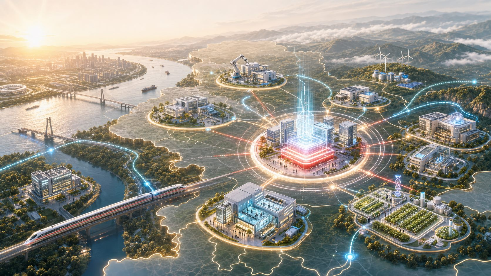
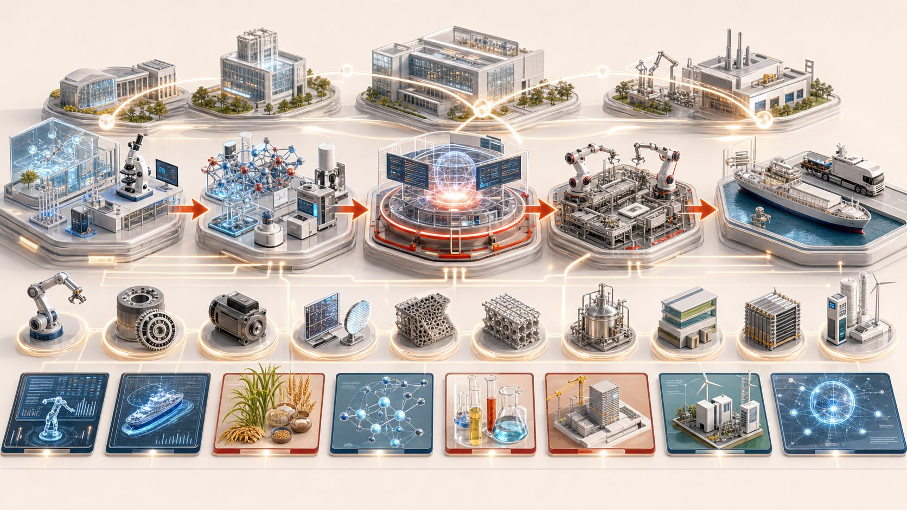
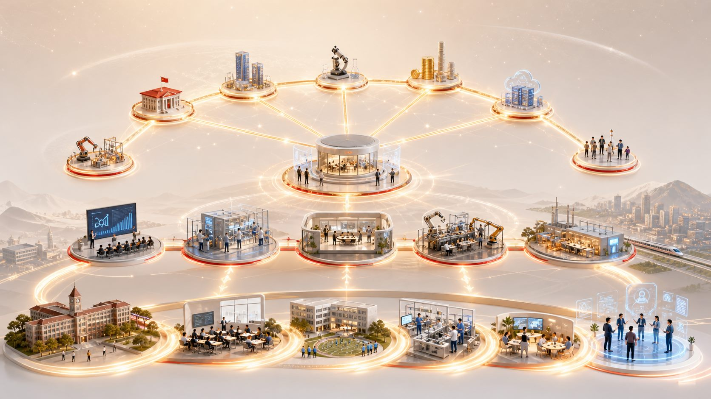

区域创新体系
依托科创大走廊，构建点面结合、开放协同的创新体系。
第三章的重点，是把创新从“资源导入”推进到“企业主导、技术攻关、成果转化、人才支撑”的闭环体系，让科技创新真正落到产业升级和现实生产力上。

第三章不是只讲科研平台，而是把区域创新、企业主体、关键技术、成果转化、教育科技人才放进同一套运行机制。
依托科创大走廊，构建点面结合、开放协同的创新体系。
推动企业成为研发投入、科研组织、成果转化主体。
围绕传统、新兴、未来产业，突破关键核心技术瓶颈。
建设政产学研金服用协同的成果转化体系。
让教育培养人才、人才支撑科技、科技引领教育形成循环。
依托武鄂黄黄咸光谷科创大走廊，深度参与武汉国家科技创新中心建设，形成融通协作的创新共同体。
建设科创大走廊黄冈功能区、主城创新高地和特色创新发展基地。
前台引才、研发、孵化在武汉；后台用才、转化、生产在黄冈。
技术创新中心、重点实验室、新型研发机构和产业技术研究院联动。
规划强调企业主导的产学研协同创新，推动创新要素向企业集聚。

到“十五五”末，规上高新技术企业达到 1500 家以上。
科技型中小企业、高新技术企业、科创新物种企业、科技领军企业逐级成长。
实施规上工业企业研发机构扩面攻坚行动，力争企业研发活动全覆盖。
这一节把技术攻关分成传统产业、新兴产业、未来产业三类，强调集中突破关键核心技术瓶颈。
农产品精深加工、道地药材良种选育、建材节能降耗、石材固废利用、船舶智能焊接、纺织智能巡检等。
半导体材料、精密部件、智能传感器、新型储能、高端专用化学品、绿色合成技术。
高精度减速器、智能驱动模组、多模态感知控制、生物酶制剂、生物基材料、生物燃料、氢能技术。
建立政产学研金服用“北斗七星式”成果转化体系，提升科技成果供给与产业需求匹配度。

“一校（院）一中心”、大别山分中心、科技“汉交所”、专业经理人队伍共同支撑技术交易。
职务科技成果赋权、收益分配激励、科研管理容错免责，提升成果就地转化率。
光电材料中试转化、硅基光电子器件、蕲艾精深加工、道地药材育种、智能农机适配等场景开放。
教育链、人才链、产业链、创新链融合，是第三章闭环的最后一环。